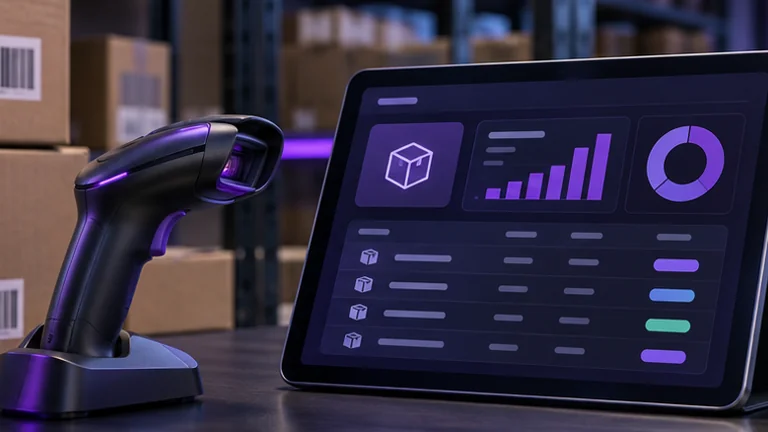

Inventory and asset records
Track stock receipts, transfers and usage by location. Define who can approve a transfer and how the team records discrepancies or corrections.
Service
Custom web applications for Malaysian businesses that need clearer records, approvals, permissions and reporting.

Custom software maps an internal process into screens, roles and records. For example, an inventory team could log incoming stock, submit transfers for approval and investigate discrepancies from a shared history.
A first release can cover user accounts, records, dashboards, approvals and reports. Define what each role can view or change, including how access changes when a staff member moves teams.
Agree which system owns each record. Verify API access, export formats and migration needs. Decide who owns backups, how restores are tested and what data needs to be retained.
Map real scenarios, review prototypes, test user permissions and exception cases, then run a pilot with representative data. Agree deployment, staff training and maintenance responsibilities before rollout.
Track stock receipts, transfers and usage by location. Define who can approve a transfer and how the team records discrepancies or corrections.
Manage applications, bookings, member records and status changes. Agree which actions customers can complete themselves and which require staff review.
Show practical measures such as outstanding approvals, overdue records or stock movements. Define how each number is calculated and which team is responsible for the underlying data.
Start with one real process. For a multi-branch inventory workflow, map stock-in, location-to-location transfers and adjustments. Use sample records to check that branch staff and managers see the information they need.
Discuss screens, roles, reports, audit history, data import and integrations. Agree testing, rollout and handover, with optional modules priced separately where appropriate.
A dashboard can bring stock records and operational summaries into one view.
Illustrative example
Yes. Start with the workflow that causes the most repeated work, then use pilot feedback to prioritise the next modules.
Bring sample spreadsheets, reports, user roles and examples of approvals or handoffs. Remove personal data from samples.
Record the data model, permissions and integrations at handover. Agree how support and enhancements will be quoted.
Start With Nuvix
Tell us what you want to create — website, system, NuCard, automation, SEO, Google Ads, design, printing, or ongoing support.